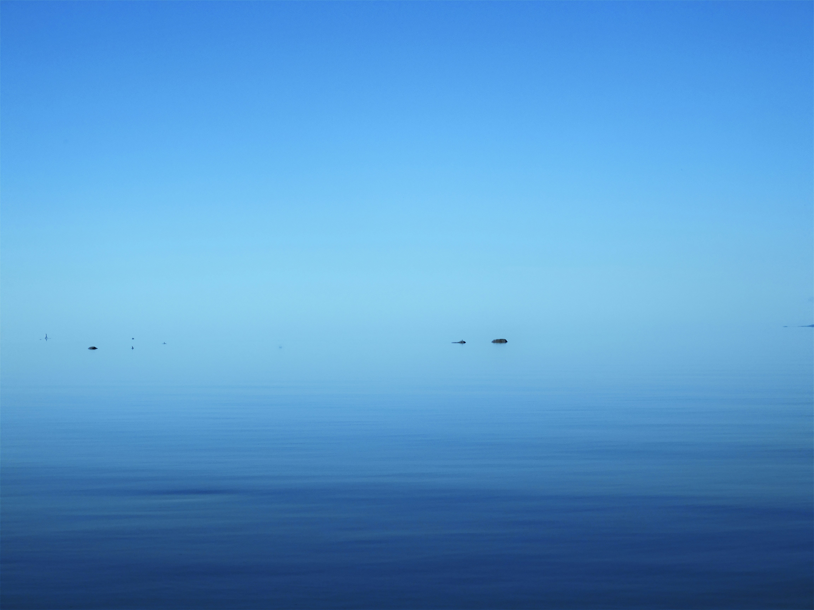
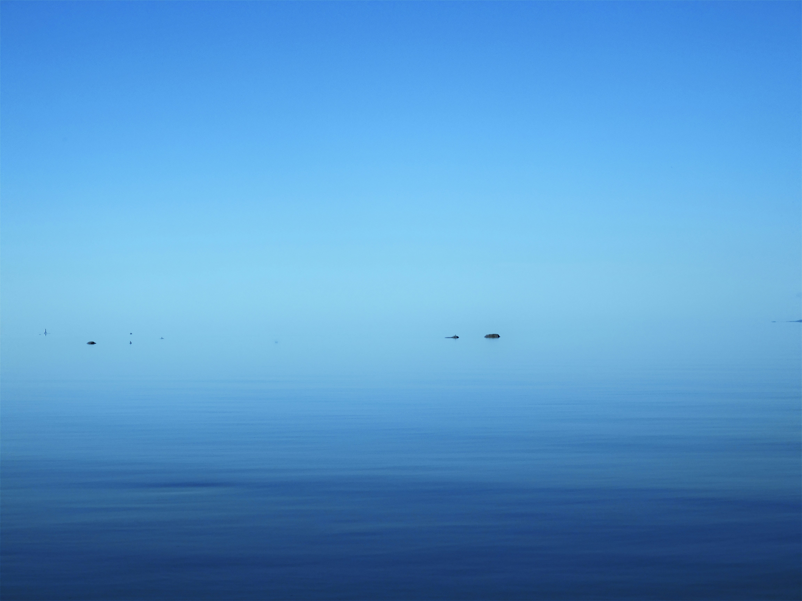

LA BALENA ALAURENCA
Procés
Aquí va el texto detrás de "Procés".
Història
Dia 11 de desembre de 1912, un exemplar de rorqual comú embarrancava en la platja de Punta Prima, al municipi de Sant Lluís, Menorca. Al dia següent La Voz de Menorca recollia la notícia, amb una nota titulada Un ballenato en Menorca. En ella especificava que la matinada del mateix dia l’animal ha estat remolcat per les barques de tres pescadors, Juan Perches Donjo, Juan Perches Piris i Gaspar Melsion, suposant que arribarien al migdia a Sa Vinyeta, devora l’Arsenal. Allà quedaria exposat a la curiositat del públic fins dia 16. Llegir més
 
